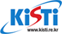

Service 01
어플리케이션 개발 및 서비스
업무 요구사항을 분석해 공공 서비스에 맞는 어플리케이션을 설계하고 개발합니다.
IT 환경 변화에 따라 다양하고 폭넓은 요구사항을 충족시키기 위해 최선을 다하고 있습니다. 끊임없이 변화하는 IT 기술에 대한 전문성을 바탕으로, 고객의 비즈니스 환경에 최적화된 서비스를 제공합니다.
업무 요구사항을 분석해 공공 서비스에 맞는 어플리케이션을 설계하고 개발합니다.
운영 중인 어플리케이션의 개선 요청과 변경 사항에 신속하고 안정적으로 대응합니다.
시스템을 안정적으로 운영하고, 병목을 찾아 응답 속도와 처리 효율을 개선합니다.
사용자가 새로운 시스템에 빠르게 적응하도록 교육과 지속적인 지원을 제공합니다.
공공기관의 공용시스템 소프트웨어를 지속적으로 유지보수해 업무 효율을 높입니다. 사용자의 업무 환경에 맞춰 보다 안전하고 효율적인 서비스를 제공합니다.
자원 사용과 응답 상태를 점검해 시스템이 최적의 성능을 유지하도록 관리합니다.
장애 징후를 조기에 파악하고, 발생 시 원인을 분석해 신속하게 복구합니다.
네트워크 구성과 연결 상태를 관리해 안정적인 서비스 환경을 유지합니다.
중요 데이터를 체계적으로 백업하고, 필요할 때 복원할 수 있도록 관리합니다.
소프트웨어 변경 이력과 버전을 관리해 일관되고 안전한 운영 환경을 유지합니다.
자체 전문인력과 협력사를 통한 통합 유지보수로 급변하는 IT 환경에 유연하게 대처하고, 고객사 전산시스템의 효율적인 운영과 가용성을 보장합니다.
시스템 구축의 전 과정을 하나의 팀이 책임지고, 구축 이후의 운영과 유지보수까지 자연스럽게 이어갑니다.
업무 환경과 요구사항을 분석하고, 목표 시스템의 구조와 구축 범위를 설계합니다.
설계에 따라 어플리케이션을 개발하고 인프라를 구성해 시스템을 구축합니다.
기능과 성능을 검증한 뒤 운영 환경으로 안정적으로 이행하고, 사용자 교육을 지원합니다.
성능·장애·백업·버전 관리로 시스템의 안정적인 운영과 가용성을 지원합니다.
공공 분야의 다양한 정보화 사업을 수행하며 쌓은 경험으로, 공공기관의 업무 특성과 요구사항을 깊이 이해합니다.
자체 전문인력과 협력사가 함께하는 체계적인 수행 구조로, 다양한 전산장비와 시스템 환경에 대응합니다.
